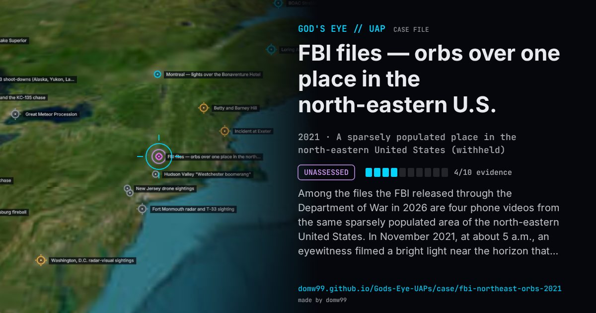

FBI files — orbs over one place in the north-eastern U.S.

Among the files the FBI released through the Department of War in 2026 are four phone videos from the same sparsely populated area of the north-eastern United States. In November 2021, at about 5 a.m., an eyewitness filmed a bright light near the horizon that resolved into several lights rotating erratically around each other. In March 2022 the same witness filmed two red lights, the lower turning slowly around the upper; in October 2024, a luminous “plasma-like” sphere that hung over a pond for about 45 minutes, shedding smaller points. In July 2025 a couple within 25 miles of those places saw a red sphere hovering 25 feet above their backyard, then a second above it; the two moved off together, silently, over the trees. The FBI calls the first witness highly credible and says the government authenticated the 2024 video; it does not say what the lights were.
Explanation
Released in 2026 with the witnesses’ statements and the FBI’s view that they are credible, but with no determination of what the lights were. The phone videos are short, shaky and distant.
What was seen
Shape: Bright lights splitting into several rotating points; red spheres; a “plasma-like” sphere over a pond; two red orbs moving together
Witnesses: An eyewitness the FBI rates highly credible, and in 2025 a couple about 25 miles away
Duration: Minutes to 45 minutes each, on four occasions between 2021 and 2025
Sources
- DVIDS — FBI-UAP-PR001, Triangle Orbs, 2021
- DVIDS — FBI-UAP-PR003, Orbs Over the Pond, 2024
- DVIDS — FBI-UAP-PR004, Northeastern Orb Sighting, 2025
Browse
- United States
- 2020s
- Unassessed
- Recurring lights
- Official government documents
- Many independent witnesses
- Video footage
- Lights and fireballs
- Spheres and orbs
- Formations and rows of lights